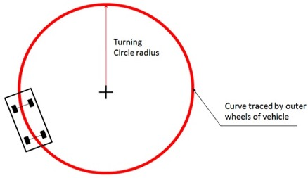
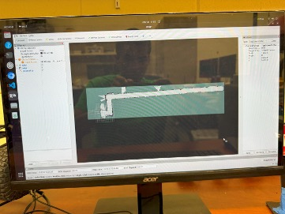
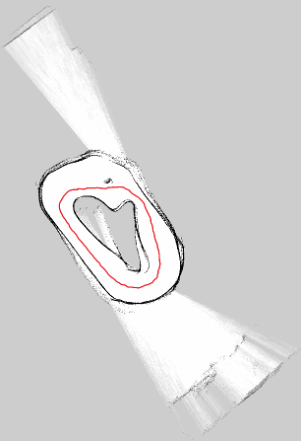

Overview
- Developed active safety systems for autonomous and semi-autonomous vehicles using ROS2, Python, and simulation tools.
- Improved vehicle odometry calibration to support more accurate localization and mapping.
- Built a SLAM-based mapping workflow and generated a static map for autonomous navigation.
- Used Nav2 map server and AMCL to publish maps and localize the vehicle in the environment.
- Worked on trajectory optimization to improve center-line path planning and safer navigation behavior.
- Collaborated in a VIP research team to test, debug, and present progress throughout the semester.
Process Walkthrough
This project progressed from odometry calibration to mapping, localization, and trajectory planning. Each stage built on the previous one to improve the reliability of the autonomous vehicle system.
1. Odometry Calibration
We followed an odometry calibration procedure and adjusted steering and speed conversion parameters in order to improve motion tracking. This also helped fix reversed orientation and chirality issues, where the odometry output did not match the car’s real turning direction.

2. SLAM Mapping
After improving odometry, we used SLAM Toolbox to generate a cleaner map of the indoor environment. We improved SLAM performance by increasing map resolution and tuning loop matching settings so the system could close loops more accurately.
3. Using Nav2 Map Server to Display the Map
Once the static map was captured, we used the Nav2 map server to publish it to the map topic and verified that it displayed correctly in RViz2. This gave us a stable map that could be reused for localization and navigation.

4. Localization Using AMCL
We then used AMCL to localize the vehicle against the static map. At first, we could set the initial pose but had trouble getting continuous pose estimates. After debugging, the system successfully published pose estimates and localized the car in the mapped hallway.
5. Trajectory Optimization
For path planning, we explored trajectory optimization by determining the center line of the track and improving it with a curvature-based cost metric. This step focused on making navigation smoother and more reliable.

6. Demo
We tested the full system after these steps to verify that the vehicle could successfully navigate the environment using the generated map.
Tech Stack
- ROS2
- Python
- SLAM Toolbox
- Nav2 Map Server
- AMCL
- RViz2
- OpenCV
- NVIDIA DRIVE